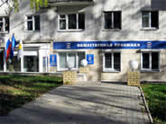

3 ноября в ДК «Родина» прошли торжества, посвященные 70-летию одного из старейших предприятий региона – завода «Лепсе».
Считаю, что работа приемных должна быть построена по двум ключевым направлениям. Во-первых, важно использовать все возможности, чтобы помочь конкретному человеку в его вопросах, проблемах, может быть, даже в беде. И, во-вторых, нужно серьезно анализировать весь массив обращений, выявлять те проблемные точки, которые требуют системных решений на общегосударственном, а может быть, на региональном уровне”
Председатель партии “Единая Россия” В.В.Путин
О приемной
Наш регион - Киров

КИРОВСКАЯ РЕГИОНАЛЬНАЯ ОБЩЕСТВЕННАЯ ПРИЕМНАЯ ПРЕДСЕДАТЕЛЯ ПАРТИИ “ЕДИНАЯ РОССИЯ” В. В. ПУТИН
В приемную Владимира Путина в каждом областном центре страны может обратиться любой гражданин Российской Федерации, проживающий в России или за ее пределами.
На сайте Кировской региональной общественной приемной жители Кировской области смогут записаться на личный прием, задать вопрос, найти ответы на вопросы. Узнать больше о приемной
Наш адрес: 610017, г. Киров, ул. Дерендяева, г. Киров, ул. Дерендяева, 64
Контактные телефоны: 8 (8332) 40-71-62, 40-71-63
Режим работы: понедельник, вторник, четверг с 10 до 17, обед с 13 до 14